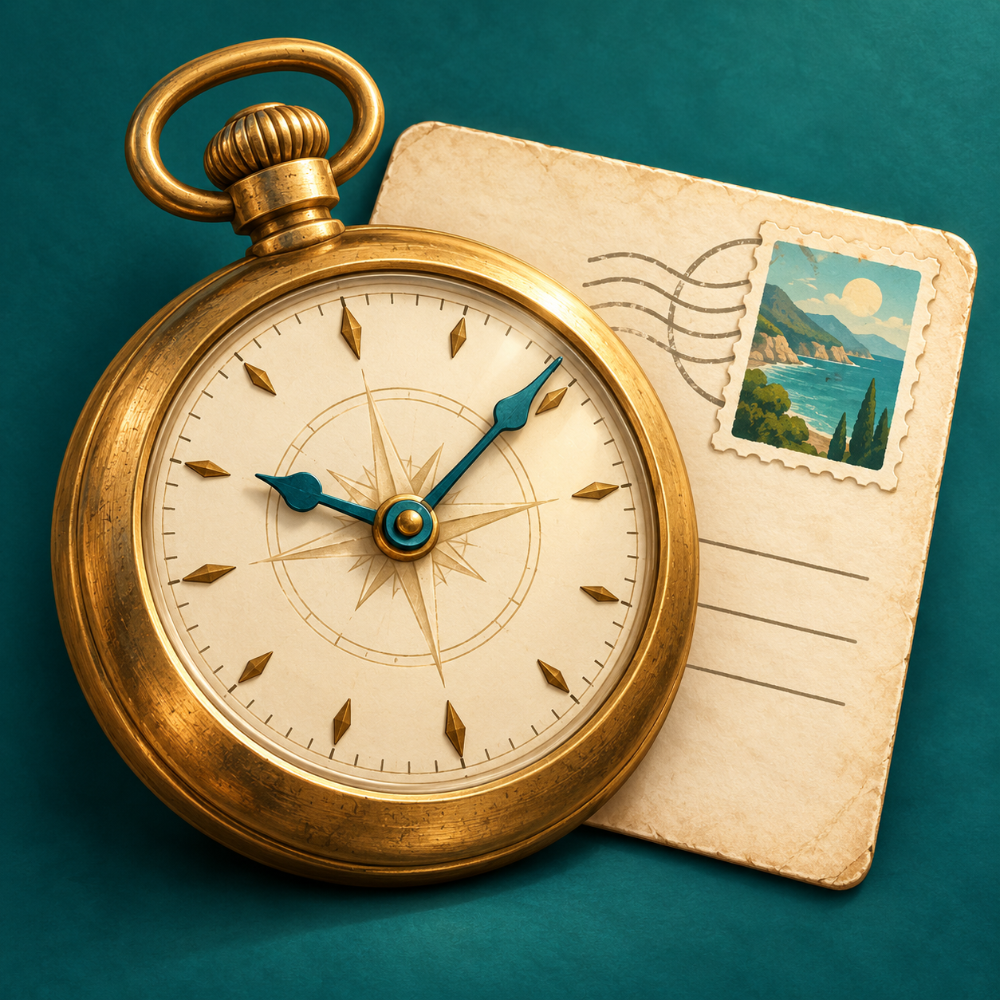
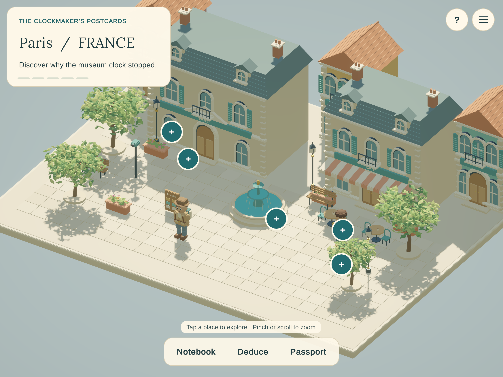

A geography detective adventure
One postcard.
A world to discover.
Step into miniature cities, notice the smallest clues and follow a clockmaker’s trail around the world.
Preparing for App Store release

Look a little closer.
Walk through handcrafted miniature scenes. Examine clocks, postcards and curious objects, then record what you discover.
Make the connection.
Use your notebook to solve observation, sequence, map and deduction puzzles. Gentle hints help when you need another look.
Follow the next postcard.
Travel through a twelve-chapter story. Revisit discoveries in your passport and pick up where you left off.
Begin with a free case.
The opening case across Paris, Venice and Murano is free. Full Adventure unlocks chapters 3–12 with a single in-app purchase: US$1.99 in the U.S., with regional prices shown by the App Store. No subscription. No ads.
Made for iPhone and iPad, with Apple silicon Mac support through the iPad edition. Gameplay works offline; purchasing and restoring require the App Store. Progress is saved on your device.
Get help